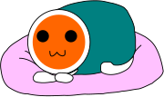

Taiko no Tatsujin Beatmap of "... Vista" by Guadalcanal Diary
Hello! 
Recently, I discovered a very cool web port of Taiko no Tatsujin called "Taiko Web". You can play both official charts and custom charts on it! It inspired me to make my own custom chart of "... Vista". I don't have much experience with making charts, so it's probably rough, but I enjoyed making it and I wanted to share it. Currently, there is an Oni difficulty and a Hard difficulty. I may tweak the chart at a later date to improve it, such as by making the Hard difficulty easier or adding a normal difficulty.